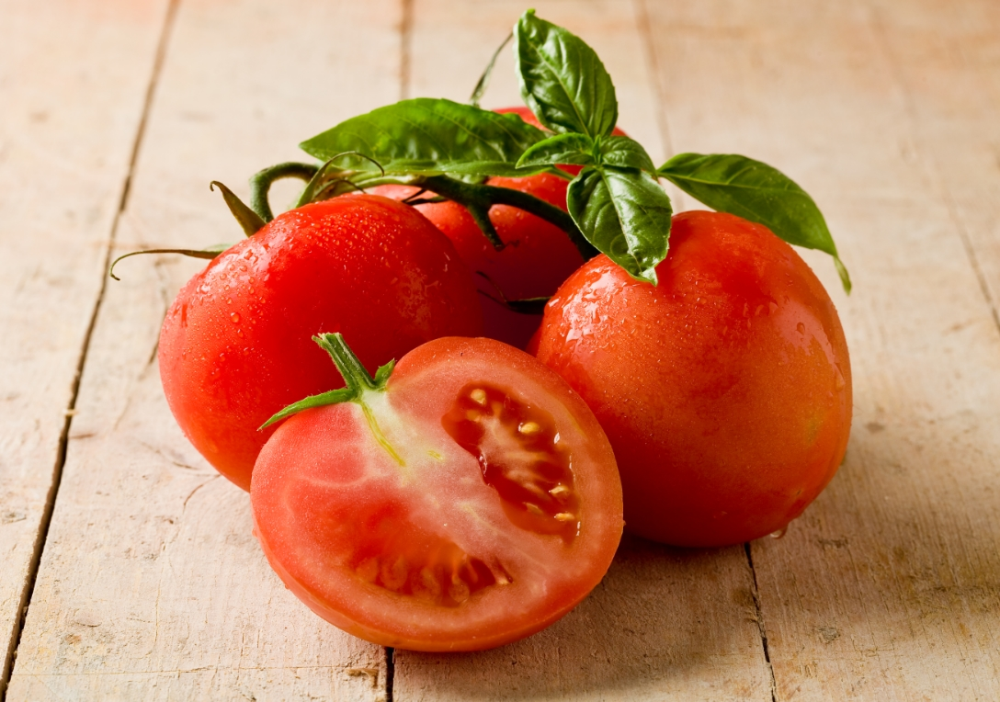

기관지와 폐를 보호하는 식품
- 해로운 세균을 없애주는 브로콜리
- 만성 염증을 줄여주는 고등어
- 해로운 활성산소를 줄여주는 토마토
- 가래를 삭이고 폐를 보호하는 기침의 명약 무
- 기관지와 폐 점막을 보호하며 기침을 멎게하는 오미자
- 천연 천식 치료제 수세미
- 기관지염, 폐렴을 다스리는 모과
- 기침과 가래를 잡아주는 늙은 호박
토마토

토마토의 라이코펜 성분은 폐질환 예방에 도움이 된다. 흡연으로 인해 증가한 체내 유해 활성산소를 라이코펜이 감소시켜서 폐 손상을 억제하기 때문이다. 이 라이코펜은 기름과 같이 먹어야 체내 흡수율이 높아지기 때문에 토마토는 날로 먹는 것 보다 올리브오일 등으로 익혀서 먹는 것이 좋다.